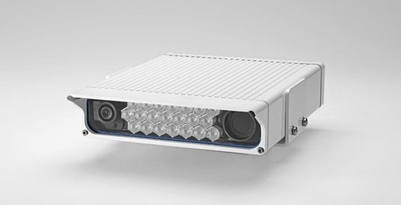

Have you seen me?

Rigspolitiet monterer i øjeblikket faste kameraer til automatisk nummerpladegenkendelse (ANPG) ved trafikknudepunkter og grænseovergange. Kameraerne kan genkendes på den hvide flade kasse, med to linser og infrarøde lysdioder imellem.
Finder du sådan et, send det venligst til @christianpanton